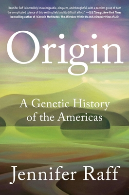
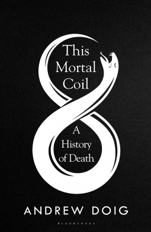
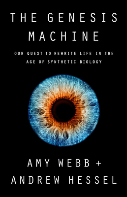
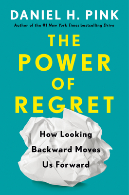

|

Book Title: Origin Overview: Origin is the story of who the first peoples in the Americas were, how and why they made the crossing, how they dispersed south, and how they lived based on a new and powerful kind of evidence: their complete genomes. By : Jennifer Raff |

Book Title: This Mortal Coil Overview: Dementia, heart failure and cancer are now the leading causes of death in industrialised nations, where life expectancy is mostly above 80. A century ago, life expectancy was about 50 and people died mainly from infectious diseases. By : Andrew Doig |

Book Title: The Genesis Machine Overview: Synthetic biology will revolutionize how we define family, how we identify disease and treat aging, where we make our homes, and how we nourish ourselves. By : Amy Webb |

Book Title: The Power of Regret Overview: Everybody has regrets, Daniel H. Pink explains in The Power of Regret. They're a universal and healthy part of being human. And understanding how regret works can help us make smarter decisions, perform better at work and school, and bring greater meaning to our lives. By : Daniel H. Pink |